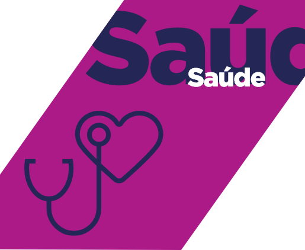

João Pessoa vai viver 4 anos a 1000.
Veja como
Conheça o Plano de Ação de Ruy para os 6 primeiros meses de gestão
Mutirão da Saúde
Compra de vagas disponíveis nos hospitais e clínicas para realização de consultas e exames com o objetivo de acabar com as filas na saúde.
Vagas na Creche
Compra de 5 mil vagas nas creches privadas para atender demanda das famílias não atendidas pela rede pública enquanto as novas creches ficam prontas. O projeto também irá ajudar a garantir o emprego de professores e auxiliares.
Mutirão de Geração de Empregos e retomada das obras públicas
A liberação de crédito para as micro e pequenas empresas através do Banco Cidadão e a retomada de obras paradas vai estimular o crescimento da economia, aumentar o número de empregos e a renda na cidade.
Cidade nos trinques
A prefeitura contrata mais empresas e funcionários para realizar um grande trabalho de manutenção na cidade, com recuperação, reforma e limpeza de escolas, postos de saúde, parques e praças de toda a cidade.
Lançamento do Calendário Turístico 2021/2022
Apresentação de um calendário cultural e turístico de eventos para a cidade, com promoção de festivais de música, dança, cinema, teatro e feiras de artesanato para atrair turistas durante todo o ano, gerando renda para a cidade e para as pessoas.
Capacita Juventude
Capacita Juventude é um amplo programa de qualificação profissional para capacitar e inserir no mercado de trabalho os mais de 38 mil jovens de João Pessoa que hoje nem estudam e nem trabalham.
Cartão Comida na Mesa
A liberação de crédito para as micro e pequenas empresas através do Banco Cidadão e a retomada de obras paradas vai estimular o crescimento da economia, aumentar o número de empregos e a renda na cidade.
Mutirão da Saúde - 2ª Fase
A segunda fase do Mutirão da Saúde vai, em parceria com hospitais e clínicas, colocar um fim no sofrimento de quem está esperando tanto tempo na fila por uma cirurgia eletiva.
Concluir obras do Terminal Valentina e iniciar as obras do Terminal da Lagoa
Prefeitura vai terminar obras paralisadas do terminal de integração do bairro Valentina Figueiredo, que estão paralisadas, e realizar as obras de adequação do terminal de passageiros da Lagoa.
Reforço escolar - Matemática e Português
Em parceria com as escolas privadas, muitas das quais fechadas em consequência da pandemia, a prefeitura vai montar um programa de reforço escolar em matemática e português para os alunos dos 8º e 9º anos da rede municipal, 91% dos quais saem sem aprender matemática e 72% sem saber português.
Implementação do Protocolo Eletrônico na Saúde e o programa de agendamento e digital
A prefeitura vai implantar um sistema informatizado de agendamento de consultas e de acompanhamento dos pacientes na rede pública de saúde.
Cartão Reforma e Ampliação
A prefeitura vai implantar um programa voltado para a reforma de unidades habitacionais em situação precária na cidade. O cartão poderá disponibilizar um crédito de até R$ 5 mil por família para a troca ou reparo do telhado, recuperação da estrutura e das instalações sanitárias. Tudo será feito com avaliação técnica e acompanhamento de engenheiros e arquitetos da prefeitura.
Prédios públicos com Energia Renovável
Prefeitura vai instalar placas de energia solar em escolas públicas, postos de saúde e outros prédios do município para estimular soluções sustentáveis e economizar recursos com energia elétrica
Apresentação do Projeto Novo Trauminha
Abandonado nos últimos anos, o Complexo Hospitalar de Mangabeira Governador Tarcísio Burity - Ortotrauma, Trauminha, não tem mais condições de funcionamento. Por isso, a prefeitura vai construir uma nova unidade. A ideia é tornar público o projeto de construção, com prazos de início e conclusão.
Invest João Pessoa
É uma agência de promoção da cidade que será criada em parceria com a iniciativa privada com o objetivo de estimular a atração de investidores, o crescimento econômico e a geração de emprego e renda na cidade. Isso será feito por meio da apresentação e promoção de João Pessoa como um excelente destino para investidores da indústria, do comércio, dos serviços e do turismo em outras cidades e países. O Invest João Pessoa foi pensado seguindo modelos adotados em diversos lugares do mundo, a exemplo de Lisboa.
Bolsa Atleta Municipal e Ginásio Cidadão
Ruy vai resgatar dois dos mais importantes programas que implantou quando foi secretário de Juventude, Esporte e Lazer do Governo do Estado. O Bolsa Atleta garantiu um apoio financeiro a atletas com bom desempenho nas competições oficiais. O Ginásio Cidadão era um pós-horário com atividades esportivas para cerca de 1 mil crianças e adolescentes de 07 a 17 anos de escolas públicas.
5 polos do Banco Cidadão
Vamos instalar unidades descentralizadas do Banco Cidadão em cinco regiões do município para estimular projetos de micro e pequenos empreendedores com o objetivo de fortalecer a economia nos bairros.
Apresentação do projeto do Shopping Popular Miguel Couto
Para reorganizar o espaço urbano do Centro de João Pessoa, Ruy anunciou o projeto de construção de um shopping popular sobre o viaduto da Avenida Miguel Couto, otimizando a área com um ambiente capaz de abrigar até 600 comerciantes informais. O projeto é fruto do diálogo e uma série de reuniões com os ambulantes e comerciantes na área.
Plano de reestruturação dos mercados e feiras públicas
O objetivo é promover uma série de investimentos e reformas nos mercados e feiras públicos para melhorar sua infraestrutura e higiene com a finalidade de ampliar seus negócios, inclusive integrando-os ao circuito turístico da cidade.
Centro da Pessoa Idosa
Ruy vai implantar uma rede com 05 Centros da Pessoa Idosa, um em cada região da cidade. Nesses locais serão disponibilizadas sessões de fisioterapia, yoga e aulas de hidroginástica, artesanato e inglês. Um conjunto de serviços voltados à saúde e ao bem-estar das pessoas da terceira idade.
Projeto Paz nas Escolas
A prefeitura vai instalar câmeras de segurança, sistemas de controle de acesso dos alunos, um botão de alerta para a secretaria das escolas e ampliar as rondas escolares realizadas pela Guarda Municipal.
Inauguração do 1º Hospital Veterinário
Entre uma série de medidas de proteção e defesa do bem-estar animal, a prefeitura vai implantar o primeiro Hospital Veterinário de João Pessoa.
Início das Obras do Centro de Diagnóstico por Imagem
Com a finalidade de organizar e dar maior celeridade à realização de exames de diagnóstico, inclusive por imagem, a prefeitura vai construir um Centro de Diagnóstico de Imagem.
Propostas por área
Conheça as principais propostas do Programa de Ruy para cada área
- 